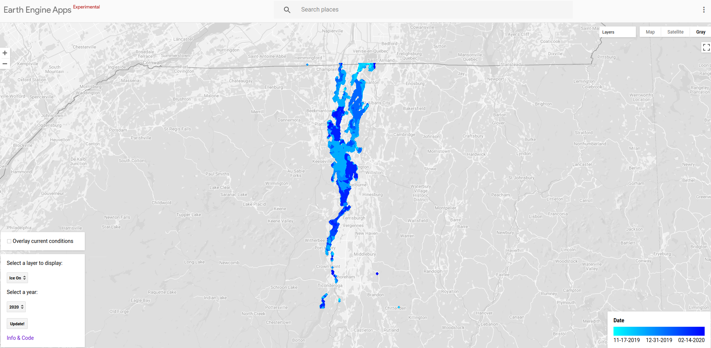

Maps
Sometimes I make maps!
- I'm working on a Google Earth Engine web app to explore ice coverage and historical ice-on and ice-off dates on Lake Champlain, using Sentinel-1 C-band SAR imagery. [GEE App] [code] 
I have smaller projects that I've used to play with a different dataset or practice a new tool in this GitHub repository. This is a work in progress! I am graudually adding to it as I track down various projects.